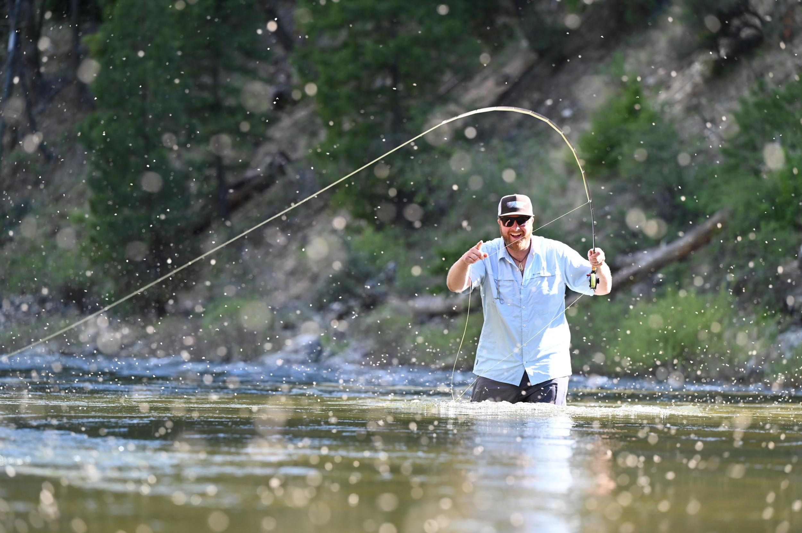

Explore Idaho's Rivers and Trails
Idaho has rivers, streams, forests, and mountain trails that make it easy to enjoy the outdoors. Fly fishing gives you a chance to slow down and pay attention to the water, while hiking lets you explore new places and see the landscape from a different point of view.

A Day of Fly Fishing
A successful fishing trip starts with preparation. Check local fishing regulations before you go, make sure you have the correct license, and learn about any special rules for the water you plan to fish. Bring a rod, reel, flies, leader, tippet, polarized sunglasses, water, and weather-appropriate clothing. Be patient, respect other anglers, and handle fish carefully if you plan to release them.
Find a Trail and Get Ready
For a hike, choose a trail that matches your experience and the time you have available. Check the forecast and trail conditions, tell someone where you are going, and bring enough water, food, layers, and a basic first-aid kit. Stay on marked trails and give wildlife plenty of space.


Leave No Trace
Pack out your trash, avoid damaging plants, respect wildlife, and leave natural features where you find them. Being responsible outdoors helps keep Idaho's rivers and trails enjoyable for the next person.
Slow down, explore responsibly, and enjoy everything Idaho's outdoors has to offer.